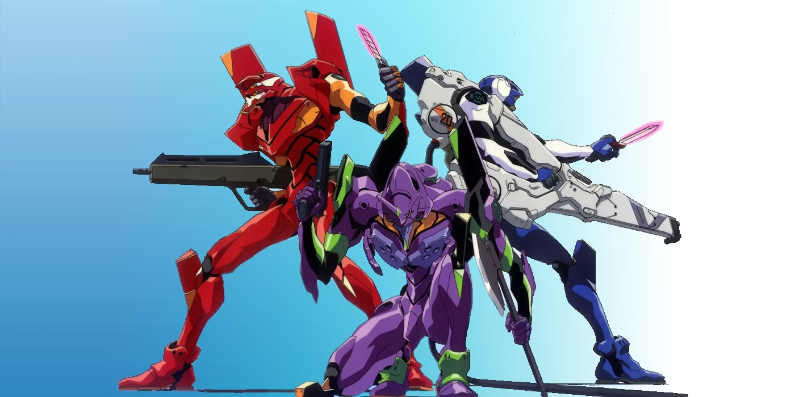
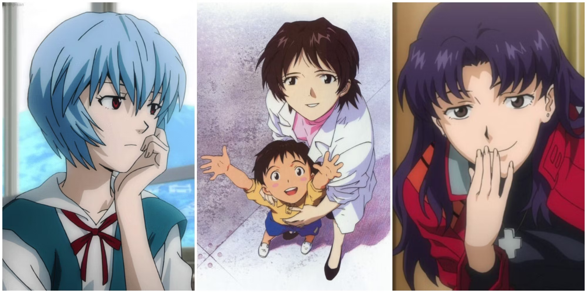

Evangelion: 1.0 You Are (Not) Alone:

Shinji Ikari is recruited by his father to pilot the giant Eva Unit-01 in combat against mysterious entities known as Angels, threatening humanity's survival. As Shinji struggles with the weight of this responsibility, he starts to form fragile connections with his fellow pilots and the staff at NERV. The battles with the Angels reveal the deep complexities of the human psyche, intertwined with the apocalyptic stakes. In the end, Shinji emerges victorious over the Angels, gaining a newfound confidence and a deeper understanding of his role as a pilot, while the NERV staff prepare for further challenges ahead.
Evangelion: 2.0 You Can (Not) Advance:

Shinji's battles continue, facing new Angels with fellow pilots Rei and Asuka. The introduction of Mari Illustrious and unexpected events lead to Shinji triggering the near-apocalyptic Third Impact in a desperate act to save Rei. This installment deepens the lore of the Evangelion universe, exploring the origins of NERV and the Evas, while the pilots confront their own inner turmoil and the mysterious SEELE organization's manipulative schemes. The movie concludes with the world teetering on the brink of destruction, setting the stage for an uncertain future.
Evangelion: 3.0 You Can (Not) Redo:
Shinji awakens after 14 years to find a world scarred by his previous actions. Amidst the ruin and decay, he must face the consequences of the cataclysm he caused, while the fight against Angels and personal demons persists. As old alliances crumble and new factions rise, Shinji must navigate a complex web of betrayal and redemption. The introduction of the enigmatic Kaworu Nagisa provides a glimmer of hope amidst despair. The film concludes with Shinji accepting his past actions and resolving to move forward, despite the overwhelming odds against him.
Evangelion: 3.0+1.0 Thrice Upon a Time:
The epic conclusion sees Shinji confronting his father, Gendo, and the corrupted NERV organization. As the final battle looms, Shinji and his companions seek to mend the shattered world and their broken hearts, striving for redemption and a new future. In this climactic chapter, the series' enduring themes of love, loss, and the human condition are brought to the forefront, culminating in a final, dramatic resolution that seeks to heal the characters' emotional wounds and determine the fate of humanity. The story ends with Shinji and his allies succeeding in their quest, leading humanity into an era of hope and rebuilding.